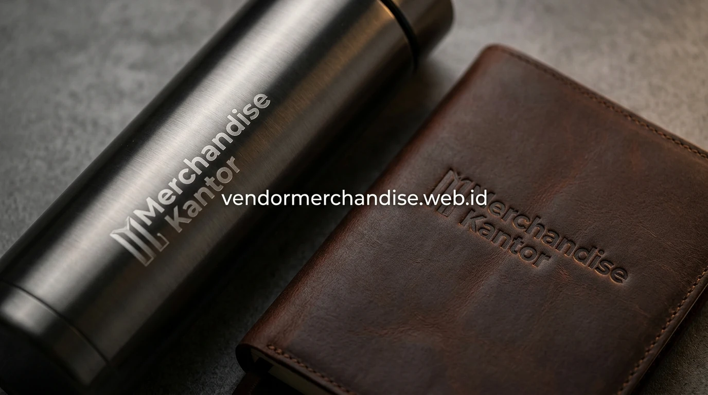

Pengawasan produksi yang ketat dari tahap awal hingga barang siap kirim menjadi jaminan utama bagi perusahaan yang memilih bekerja sama langsung dengan produsen merchandise. Merchandise Kantor hadir membawa keunggulan pabrikasi presisi untuk memenuhi pesanan souvenir korporat Anda.
Apa yang Membedakan Produsen Merchandise dengan Vendor atau Supplier?
Produsen merchandise berbeda dengan vendor atau supplier karena terlibat langsung dalam proses produksi fisik produk, sementara istilah vendor atau supplier lebih menekankan pada peran penyediaan dan distribusi produk kepada perusahaan yang memesan.
Dalam praktiknya, satu pihak dapat berperan sekaligus sebagai produsen, vendor, dan supplier apabila memiliki fasilitas produksi sendiri serta sistem distribusi yang terintegrasi, seperti yang diterapkan Merchandise Kantor dalam melayani kebutuhan perusahaan.
Bagaimana Proses Produksi Merchandise Custom dari Awal hingga Selesai?
Proses produksi merchandise custom dari awal hingga selesai melibatkan beberapa tahap utama, mulai dari perencanaan desain, pemilihan bahan, penerapan metode branding, hingga quality control sebelum produk dikirim ke perusahaan pemesan.
Tahapan umum yang dilalui dalam proses produksi:
- Perencanaan desain berdasarkan logo dan kebutuhan perusahaan
- Pemilihan bahan baku sesuai jenis produk dan anggaran
- Proses produksi dengan penerapan metode branding yang dipilih
- Quality control untuk memastikan hasil sesuai spesifikasi
- Pengemasan dan pengiriman produk jadi ke lokasi perusahaan

Apa Saja Metode Branding yang Tersedia dari Produsen Merchandise?
Metode branding yang tersedia dari produsen merchandise disesuaikan dengan jenis bahan dan bentuk produk, sehingga perusahaan dapat memilih metode yang paling sesuai dengan hasil akhir yang diinginkan serta anggaran yang tersedia.
Beberapa metode branding yang umum digunakan:
- Sablon untuk produk berbahan kain dengan desain sederhana
- UV printing untuk produk berbahan keras dengan detail warna lebih kompleks
- Bordir untuk produk berbahan kain dengan kesan lebih premium
- Laser engraving untuk produk berbahan logam atau kayu
Mengapa Kontrol Kualitas Penting dalam Proses Produksi Merchandise?
Kontrol kualitas penting dalam proses produksi merchandise karena setiap unit yang dihasilkan perlu memenuhi standar yang sama, terutama untuk pesanan dalam jumlah besar yang akan digunakan sebagai representasi identitas perusahaan di berbagai kesempatan.
Proses quality control umumnya mencakup pengecekan hasil cetak, kesesuaian warna, kekuatan bahan, hingga kerapian pengemasan sebelum produk dikirim ke perusahaan pemesan, guna memastikan seluruh unit layak digunakan sesuai tujuan awal pemesanan.
"Integrasi fasilitas produksi dan pengawasan mutu memastikan setiap unit merchandise korporat yang dihasilkan tampil sempurna."
— Erlang Sinatrya, Penulis Merchandise Kantor
Produsen merchandise dapat dikombinasikan dengan kebutuhan vendor merchandise untuk kebutuhan B2B lainnya agar seluruh proses mulai dari produksi hingga distribusi berjalan dalam satu rangkaian kerja sama yang terpadu.

Ajukan Kerja Sama Produsen Merchandise di Merchandise Kantor
Merchandise Kantor siap menjadi produsen merchandise custom bagi perusahaan Anda dengan pilihan metode branding dan kapasitas produksi yang disesuaikan kebutuhan pesanan. Hubungi tim Merchandise Kantor sekarang untuk konsultasi produksi dan estimasi harga sesuai spesifikasi produk perusahaan Anda.